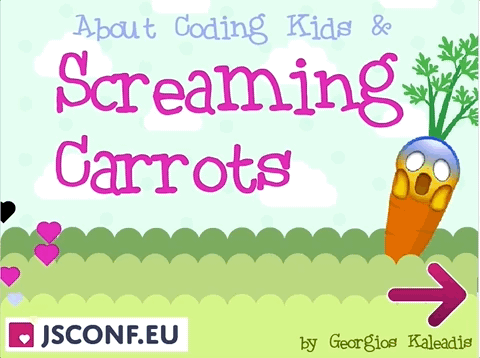

This is the reference sheet where you can find more information about my talk About Coding Kids and Screaming Carrots (JSConf 2018). It includes my slides, sources of my inspiration, a linklist and my proposal fo this talk.

You can find the slides here as a PDF file. The file slides.md contains the full presentation in markdown format displayed through the Mac OSX app Deckset
The scratch project is available on scratch.mit.edu or download it from here
I read a lot to bake my gut feeling about the whole coding kids topic.
The combustion engine comparison idea comes from this excellent talk by Linda Liukas TEDxCERN
Source is this npr.org article and seems to quote by Jeff Atwood.
My overall thesis about coding vs. technology is inspired by this great read at kidscodes.com
I read the book "Program or be programed" by Rushkoff and "Coding as a playground" by Marina Umaschi Bers they both mention the producer vs consumer approach that opened my eyes what's wrong about hanging in front of a smartphone all day as a kid.
That MakeyMakey idea comes from this youtube video ✌️
To help people getting started with their future proposals here is the one that got me into JSConf 2018.
About Coding Kids and Screaming Carrots
Kids will rule the world with coding as their superpower. My talk will show how you can playfully teach coding to kids with robots, games and colorful programming tools. I will talk about the hot debate that every kid should learn programming and why it matters for their future. By the end of the day, you will have seen human robots, happy kids and screaming carrots.
Kids will rule the world with coding as their superpower. You will learn why coding matters for kids and how robots and screaming carrots can help learning it.
I have a passion which I'd love to talk about. It’s teaching coding to kids. I started programming as a kid and I teach coding to kids in my spare time. It’s just magical to see their glowing eyes when they achieve their goals in Scratch, play around with a MakeyMakey board or create their first stop-motion movie.
The screaming carrot from the title is an entertaining installation where you cut a carrot which then screams. This is always fun and I plan to show something like this in my talk.
Learned coding with flash as a kid. Programed with Flash as a Freelancer for 15 years. Today I'm a Frontend developer for Angular & React In my spare time I teach coding to kids, love to tinker around with webgl and love to fold complex Origami.